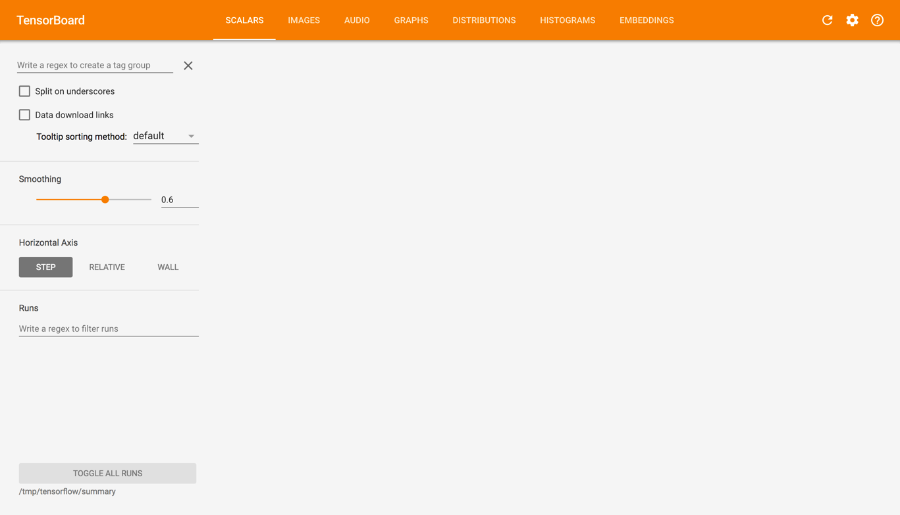
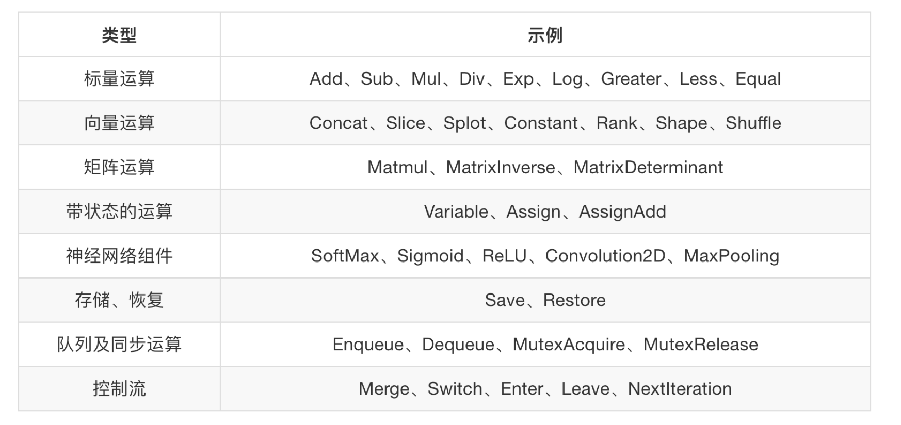

图与TensorBoard
学习目标
目标
- 说明图的基本使用
- 应用tf.Graph创建图、tf.get_default_graph获取默认图
- 知道开启TensorBoard过程
- 知道图当中op的名字
应用
- 无
1、什么是图结构
图包含了一组tf.Operation代表计算单元的对象和tf.Tensor代表计算单元之间流动的数据。
2、图相关操作
2.1 图中操作、会话默认属性
默认op、sess都含有graph属性 ，都在一张图中
2.2 获取默认图
Graph默认注册，并可通过调用访问 tf.get_default_graph，要将操作添加到默认图形中，直接创建OP即可。
# 实现一个加法运算
a = tf.constant(3.0)
b = tf.constant(4.0)
sum = tf.add(a, b)
# 图：打印出来，就是一个分配内存的地址
# more所有的张量、op、会话都在一张图当中
print(tf.get_default_graph())
# print(sum)
# 会话,默认只能运行默认的图，不能运行其它的（可以通过参数解决）
with tf.Session() as sess:
print(sess.run(sum1))
print(a.graph)
print(b.graph)
print(sess.graph)
2.3 创建图
可以通过tf.Graph创建图，如果要在这张图中创建OP，典型用法是使用tf.Graph.as_default上下文管理器
g = tf.Graph()
with g.as_default():
# 在g图中定义了一个operation
c = tf.constant(30.0)
assert c.graph is g
那么TensorFlow有一个亮点就是，我们能看到自己写的程序，这个功能就是Tensorboard，在这里我们先简单介绍一下基本功能。后面根据能力在使用一些高级功能
3、 TensorBoard:可视化学习
TensorFlow 可用于训练大规模深度神经网络所需的计算，使用该工具涉及的计算往往复杂而深奥。为了更方便 TensorFlow 程序的理解、调试与优化，有了TensorBoard 的可视化工具。

3.1 数据序列化-events文件
TensorBoard 通过读取 TensorFlow 的事件文件来运行,需要将数据生成一个序列化的 Summary protobuf 对象。
# 返回filewriter,写入事件文件到指定目录(最好用绝对路径)，以提供给tensorboard使用
tf.summary.FileWriter('/tmp/tensorflow/summary/test/', graph=sess.graph)
这将在指定目录中生成一个 event 文件，其名称格式如下：
events.out.tfevents.{timestamp}.{hostname}
3.2 启动TensorBoard
tensorboard --logdir="/tmp/tensorflow/summary/test/"
在浏览器中打开 TensorBoard 的图页面 127.0.0.1:6006 ，会看到与以下图形类似的图,在GRAPHS模块我们可以看到以下图结构

4、OP
哪些是OP？

只要是tf下的API我们都可以称之为一个OP，也称之为指令
a = tf.constant(3.0, dtype=tf.float32)
b = tf.constant(4.0) # also tf.float32 implicitly
total = a + b
print(a)
print(b)
print(total)
打印语句会生成：
Tensor("Const:0", shape=(), dtype=float32)
Tensor("Const_1:0", shape=(), dtype=float32)
Tensor("add:0", shape=(), dtype=float32)
注意，打印出来的是张量值，可以理解成OP当中包含了这个值。并且每一个OP指令都对应一个唯一的名称，如上面的Const:0，这个在TensorBoard上面也可以显示
请注意，tf.Tensor 对象以输出张量的 tf.Operation 明确命名。张量名称的形式为 "
- "
" 是生成该张量的指令的名称 - "" 是一个整数，它表示该张量在指令的输出中的索引
4.1 指令名称
tf.Graph对象为其包含的 tf.Operatio对象定义一个命名空间。TensorFlow 会自动为您的图中的每个指令选择一个唯一名称，但您也可以指定描述性名称，使程序阅读起来更轻松。我们可以以下方式改写指令名称
- 每个创建新的 tf.Operation 或返回新的 tf.Tensor 的 API 函数可以接受可选的 name 参数。
例如，tf.constant(42.0, name="answer") 创建一个名为 "answer" 的新 tf.Operation 并返回一个名为 "answer:0" 的 tf.Tensor。如果默认图已包含名为 "answer" 的指令，则 TensorFlow 会在名称上附加 "1"、"2" 等字符，以便让名称具有唯一性。
- 当修改好之后，我们在Tensorboard显示的名字也会被修改
a = tf.constant(3.0, name="a")
b = tf.constant(4.0, name="b" )